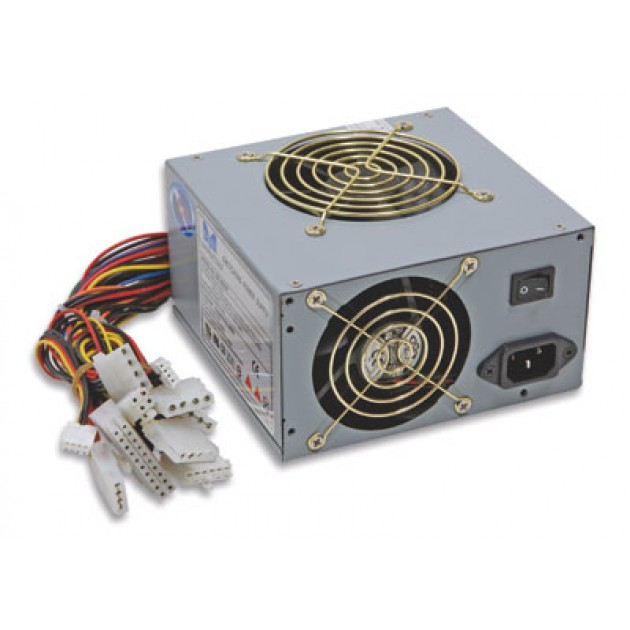

L'ALIMENTATORE
L'alimentatore converte l'alta tensione (corrente alternata) che passa nella rete elettrica in bassa tensione, perchè i computer lavorano in corrente continua.
Una volta convertita in corrente continua, l'alimentatore alimenta la scheda madre tramite un connettore.
Fino a qualche anno fa l'alimentatore attendeva il segnale per l'accensione del pc, mentre oggi questo compito è andato alla scheda madre.
